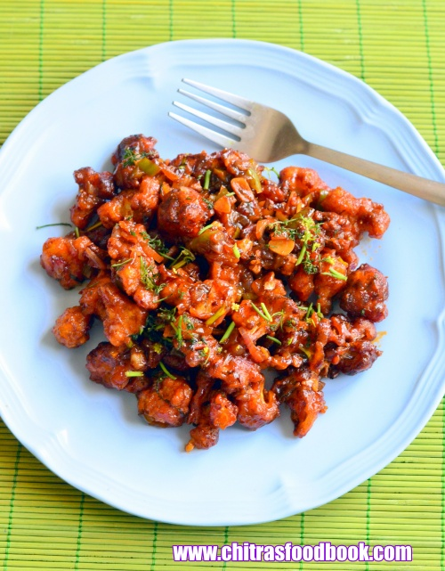
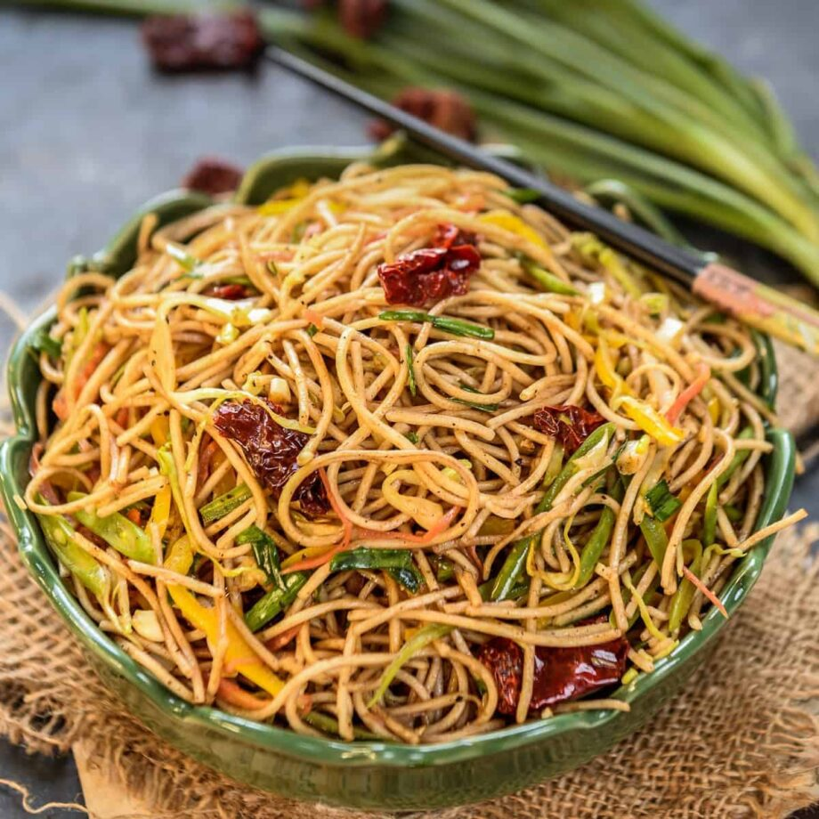
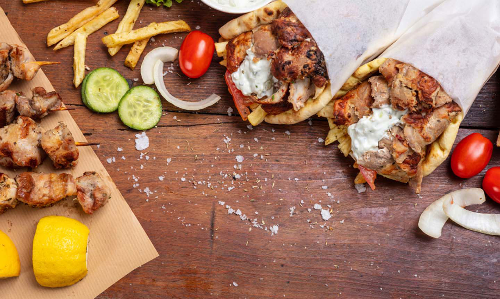

Explore the Chinise foods

Manchurian is a class of Indian Chinese dish made by roughly chopping and deep-frying ingredients such as chicken, cauliflower (gobi), prawns, fish, mutton, and paneer, and then sautéeing them in a sauce flavored with soy sauce.[2][3] Manchurian is the result of the adaptation of Chinese cooking and seasoning techniques to suit Indian tastes. It has become a staple of Indian Chinese cuisine.
The word "Manchurian" means native or inhabitant of Manchuria (in northeast China); the dish, however, is a creation of Chinese restaurants in India, and bears little resemblance to traditional Manchu cuisine or Northeastern Chinese cuisine.[4] It is said to have been invented in 1975 by Nelson Wang, a cook at the Cricket Club of India in Mumbai, when a customer asked him to create a new dish, different from what was available on the menu.[5] Wang described his invention process as starting from the basic ingredients of an Indian dish, namely chopped garlic, ginger, and green chilis, but next, instead of adding garam masala, he put in soy sauce, followed by cornstarch and the chicken itself.[6] The dish is popular across South Asia.[7] A popular vegetarian variant replaces chicken with cauliflower,[3] and is commonly known as gobi manchurian. Other vegetarian variants include mushroom, baby corn, and veggie ball as the main ingredient.

Noodles are a type of food made from unleavened dough which is either rolled flat and cut, stretched, or extruded, into long strips or strings. Noodles are a staple food in many cultures (for example, Chinese noodles, Filipino noodles, Indonesian noodles, Japanese noodles, Korean noodles, Vietnamese noodles, and long and medium length Italian pasta) and made into a variety of shapes.
While long, thin strips may be the most common, many varieties of noodles are cut into waves, helices, tubes, strings, or shells, or folded over, or cut into other shapes. Noodles are usually cooked in boiling water, sometimes with cooking oil or salt added. They are often pan-fried or deep-fried. Noodles are often served with an accompanying sauce or in a soup. Noodles can be refrigerated for short-term storage or dried and stored for future use.
The earliest written record of noodles is found in a book dated to the Eastern Han period (25–220 CE).[1] Noodles made from wheat dough became a prominent food for the people of the Han dynasty.[4] The oldest evidence of noodles was from 4,000 years ago in China.[1] In 2005, a team of archaeologists reported finding an earthenware bowl that contained 4000-year-old noodles at the Lajia archaeological site.

Fried rice is a dish of cooked rice that has been stir-fried in a wok or a frying pan and is usually mixed with other ingredients such as eggs, vegetables, seafood, or meat. It is often eaten by itself or as an accompaniment to another dish. Fried rice is a popular component of East Asian, Southeast Asian and certain South Asian cuisines, as well as a staple national dish of Indonesia. As a homemade dish, fried rice is typically made with ingredients left over from other dishes, leading to countless variations. Fried rice first developed during the Sui Dynasty in China.[1]
Many varieties of fried rice have their own specific list of ingredients. In China, common varieties include Yangzhou fried rice and Hokkien fried rice. Japanese chāhan is considered a Japanese Chinese dish, having derived from Chinese fried rice dishes. In Southeast Asia, similarly constructed Indonesian, Malaysian, and Singaporean nasi goreng and Thai khao phat are popular dishes. In the West, most restaurants catering to vegetarians have invented their own varieties of fried rice, including egg fried rice. Fried rice is also seen on the menus of American restaurants offering cuisines with no native tradition of the dish. Additionally, the cuisine of some Latin American countries includes variations on fried rice, including Ecuadorian chaulafan, Peruvian arroz chaufa, Cuban arroz frito, and Puerto Rican arroz mamposteao.

Shawarma (/ʃəˈwɑːrmə/; Arabic: شاورما) is a Middle Eastern and North African dish that originated in the Ottoman Empire,[1][2][3][4] consisting of meat cut into thin slices, stacked in an inverted cone, and roasted on a slowly turning vertical rotisserie or spit. Traditionally made with lamb or mutton, it may also be made with chicken, turkey, beef, or veal.[5][6][1] Thin slices are shaved off the cooked surface as it continuously rotates.[7][8] Shawarma is a popular street food in the Greater Middle East, from Sudan to the Levant countries such as Lebanon, Syria, Egypt, Israel, Kuwait, Iraq, Armenia, Georgia, also served widely in Saudi Arabia and the United Arab Emirates.
Shawarma is prepared from thin cuts of seasoned and marinated lamb, mutton, veal, beef, chicken, or turkey. The slices are stacked on a skewer about 60 cm (20 in) high. Pieces of fat may be added to the stack to provide extra juiciness and flavor. A motorized spit slowly turns the stack of meat in front of an electric or gas-fired heating element, continuously roasting the outer layer. Shavings are cut off the rotating stack for serving, customarily with a long, flat knife